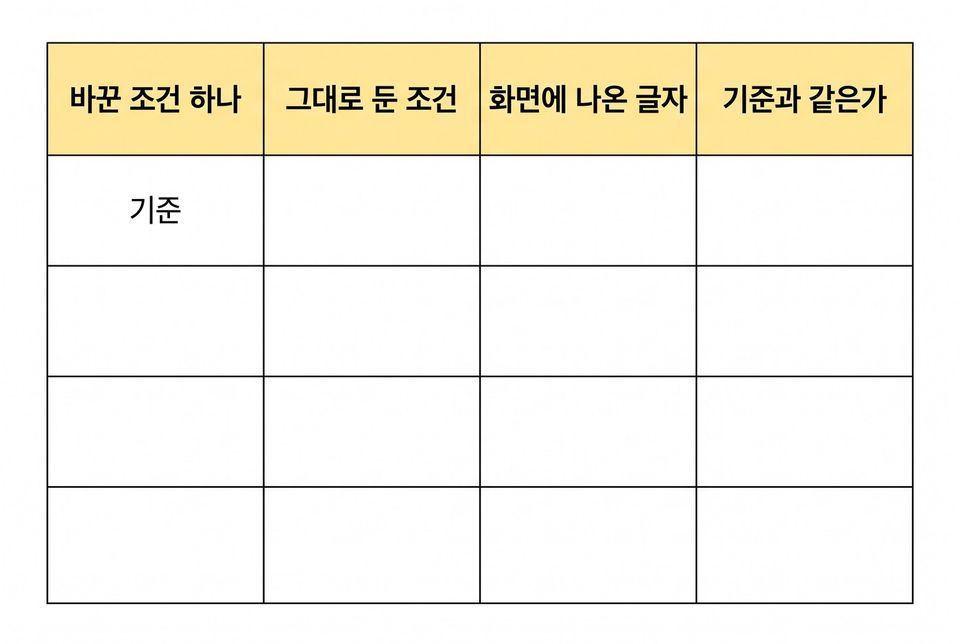
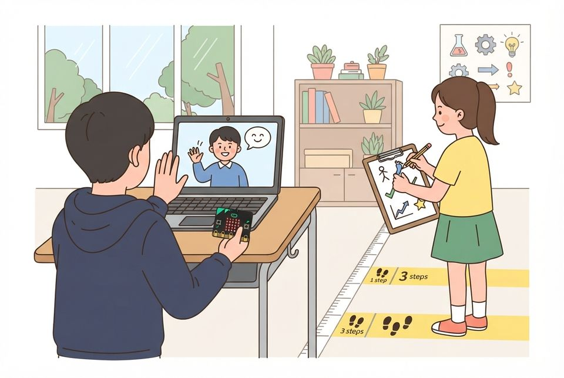
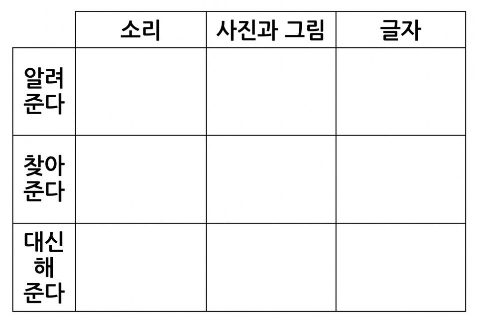

6학년 5~6차시 인공지능과 우리 생활 [6실인공지능01-01]
엔트리 음성 인식과 비디오 감지로 인사 도우미를 만들고 조건을 바꾸어 인식 결과 견주기
학습 문제 — 엔트리 음성 인식과 비디오 감지로 인사 도우미를 만들고, 거리·밝기·배경·말 속도를 바꾸어 인식 결과를 견주어 봅시다.
개요
| 성취기준 | [6실인공지능01-01] 생활 속 인공지능 사례를 찾아보고, 판별 기준에 따라 정해진 동작만 되풀이하는 기계와 인공지능을 구분한다. 연계 성취기준: [6실05-05] |
|---|---|
| 핵심 역량 | 지식정보처리 역량, 창의적 사고 역량 |
| 핵심 기능 | ① 인공지능이 만들어지는 과정 탐색하기 ② 데이터 간에 공통되는 유형이나 형태 탐색하기 ③ 엔트리 음성 인식·비디오 감지로 인사 도우미 만들기 ④ 거리·밝기·배경·말 속도를 하나씩 바꾸어 인식 결과 견주기 ⑤ 미리 학습된 인식 모델과 센서 값 반응 구분하기 ⑥ 찍히거나 녹음되는 사람에게 먼저 동의 묻기 |
| 가치 태도 | 인공지능이 사회에 미치는 영향을 파악하는 자세 인식 결과가 달라지는 조건을 끝까지 찾아보려는 자세 |
교수학습 활동
5차시 도입 동기 유발 · 학습문제 제시5차시 전개 활동1. 귀가 생긴 도우미: 음성 인식 체험 · 활동2. 눈이 생긴 도우미: 얼굴·손 인식 체험6차시 전개 활동3. 조건 바꾸어 인식 결과 견주기 · 활동4. 도우미 2.0: 눈과 귀 달기6차시 정리 배운 내용 정리 및 의뢰 해결 보고 · 다음 의뢰 예고
5차시도입7분
동기 유발
- 말로 묻는 기계에 멀리서 말해 본 경험 이야기하기
- 창을 등지거나 어두운 곳에서 찍은 사진이 어떠했는지 말하기
- 돌봄교실 선생님의 의뢰 듣기: 들어오는 사람에게 인사하고 손 든 친구를 알아채는 도우미
- 오늘 미션: 도우미가 잘 알아보는 조건을 찾는 실험 연구원 되기

학습문제 제시
- 엔트리 음성 인식과 비디오 감지로 인사 도우미를 만들고, 거리·밝기·배경·말 속도를 바꾸어 인식 결과를 견주어 봅시다.
준비물필기구
자료인식 시험 활동지, 의뢰 편지, [도입] 상황 그림
유의점경험담은 조건에 따라 달라졌다는 말만 짧게 끌어낸다.
유의점얼굴·목소리를 쓰는 활동은 미리 가정에 알리고, 원하지 않는 학생은 손이나 물건으로 대신해도 평가에 불이익이 없게 한다.
유의점활동지 배부 시간을 도입 시간에 포함한다.
5차시전개33분
활동1. 귀가 생긴 도우미: 음성 인식 체험 (13분)
- 마이크를 켜기 전 녹음될 친구에게 동의 묻기
- 인공지능 블록 불러오기에서 오디오 감지 추가하기
- 음성 인식 블록과 인식한 글자를 말하는 블록 잇기
- 음성 인식은 말을 글자로 바꾸는 미리 학습된 모델임을 알기
- 한 걸음 떨어져 ‘도서관은 몇 층에 있어요’를 읽고 결과 적기
- 비교: 소리 크기 값 블록은 숫자만 바뀌는 센서 값임을 확인하기

활동2. 눈이 생긴 도우미: 얼굴·손 인식 체험 (20분)
- 웹캠을 켜기 전 화면에 찍힐 친구에게 동의 묻기
- 인공지능 블록 불러오기에서 비디오 감지 추가하기
- 비디오 화면을 켜고 얼굴 인식을 시작하는 블록 놓기
- 계속 반복 안에 ‘인식한 얼굴 수가 1 이상이면’ 조건 넣기
- 참이면 ‘어서 오세요, 반가워요’를 말하고 2초 기다리게 하기
- 손 인식을 더해 손바닥을 펴 보이면 ‘질문이 있군요’를 말하게 하기
- 얼굴이 찍히기 싫으면 손 인식이나 사물(컵) 인식만 쓰기

준비물필기구, 사물 한 가지
자료인식 시험 활동지, 학급 기기(웹캠·마이크), 인사 도우미 뼈대 작품
유의점음성 인식·얼굴 인식은 미리 학습된 모델이고, 소리 크기 값은 인식이 아닌 센서 값임을 나누어 말한다.
유의점목소리·웹캠 화면은 저장·캡처하지 않고 결과만 옮겨 적으며, 나이·성별·감정 값은 쓰지 않는다.
유의점수업 전 엔트리의 실제 블록·메뉴 이름을 확인한다.
유의점조립이 어려운 학생에게는 뼈대 작품을 주고 말할 문장만 바꾸게 한다.
유의점빨리 끝낸 학생은 얼굴 수가 2 이상일 때 할 말을 더하게 한다.
6차시전개33분
활동3. 조건 바꾸어 인식 결과 견주기 (20분)
- 밝은 곳에서 한 걸음 떨어진 상태를 기준으로 정하기
- 거리·밝기(창 등지기)·배경(무늬 천)·말 속도 가운데 하나씩 바꾸기
- 바꿀 때마다 바꾼 조건 하나와 인식 결과를 기록표에 적기
- 결과가 달라진 조건은 같은 조건으로 두 번 더 해 보기
- ‘못 알아보았다’ 대신 모델이 어떤 자료를 많이 배웠을지 쓰기
- 도전: 인식이 잘 안 되는 조건에서 도우미가 할 안내 말 더하기
활동4. 도우미 2.0: 눈과 귀 달기 (13분)
- 지난 시간에 만든 도우미 얼굴 틀을 노트북에 다시 걸기
- 웹캠 자리에 눈, 마이크 자리에 귀 모양 색지 붙이기
- 실험 결과로 ‘잘 알아보는 조건’ 안내판 만들어 붙이기
- 짝 모둠 도우미 앞에서 안내판대로 서서 인사받아 보기
- 개발 일지에 1.0에서 2.0으로 고친 점 한 줄 적기
준비물도우미 얼굴 틀, 색지, 가위, 테이프, 무늬 천, 거리 표시 테이프
자료인식 시험 활동지, 개발 일지
유의점한 번 해 보고 단정하지 않도록 같은 조건으로 다시 확인하게 한다.
유의점결과가 달라진 까닭은 모델이 배운 자료와 입력 조건으로 설명하게 한다.
유의점눈·귀 표시가 렌즈와 마이크 구멍을 가리지 않게 한다.
유의점안내판 예: 한 걸음 안, 밝은 쪽, 천천히 말하기.
6차시정리7분
배운 내용 정리 및 의뢰 해결 보고 (5분)
- 가장 많이 달라진 조건과 까닭을 배운 자료와 이어 한 문장으로 쓰기
- 음성·비디오 인식(미리 학습된 모델)과 카드 모델(직접 학습시킨 모델) 견주기
- 오늘 만든 도우미와 생활 속 인식 사례를 학급 마인드맵에 붙이기

- 돌봄교실 선생님께 드릴 사용 안내 한 줄 쓰기
다음 의뢰 예고 (2분)
- 5학년 담임 선생님의 의뢰 알기: 전학 온 친구를 돕는 통역 도우미 만들기
- 기기를 반납하고 활동지 두 장을 정리해 제출하기
자료학급 마인드맵 전지, 붙임쪽지
유의점음성 인식·비디오 감지는 다른 사람이 미리 학습시켜 둔 모델로, 3~4차시에 우리가 직접 학습시킨 모델과 다름을 짚는다.
유의점마인드맵은 꾸미기보다 붙임쪽지 한 장에 기능과 까닭 한 줄을 쓰게 한다.
유의점결과가 달라지지 않았다고 써도 조건과 까닭을 적으면 인정한다.
유의점수업 뒤 비디오 감지를 끄고 웹캠 표시등이 꺼졌는지 확인한다.
유의점쓰기가 어려운 학생은 말로 확인하고 도운 사실을 적는다.
평가 계획
인공지능 소양 · 조건을 하나만 바꾸었을 때 달라지는 인식 결과의 관찰
엔트리 음성 인식과 비디오 감지로 인사 도우미를 만들고, 거리·밝기·배경·말 속도를 하나씩 바꾸어 인식 결과를 견주며 달라진 까닭을 설명할 수 있는가?
| 수준 | 평가 기준 |
|---|---|
| 매우 잘함 | 음성 인식과 비디오 감지로 만든 도우미를 실행해 기록표를 조건 하나만 바꾸어 채우고 그대로 둔 조건까지 적는다. 결과가 달라진 조건을 같은 조건으로 다시 확인해 적고, 그 까닭을 모델이 배운 자료와 입력 조건으로 설명한다. 미리 학습된 인식 모델과 소리 크기 같은 센서 값의 차이를 말한다. |
| 잘함 | 음성 인식과 비디오 감지 가운데 하나 이상을 실행해 기록표를 대체로 채우고, 조건을 하나만 바꾼 줄에서 결과가 달라진 지점을 찾아 적는다. 까닭을 배운 자료와 이어 간단히 설명한다. |
| 보통 | 뼈대 작품으로 조건을 바꾸어 시험하고 결과는 적으나, 그대로 둔 조건이나 다시 확인한 기록이 일부 빠지고 까닭 설명이 짧다. |
| 노력요함 | 교사가 조건을 하나씩 짚어 주고 기록 칸을 함께 읽어 준 뒤에도 바꾼 조건과 그대로 둔 조건을 갈라 적거나 결과가 달라진 까닭을 말하는 데 어려움이 있다. |
| 미관찰 | 결석이나 미제출, 기기 장애로 확인하지 못한 경우. 낮은 성취로 적지 않고 따로 기록한 뒤 보충 확인 시점을 정한다. |
평가 방법 활동지 분석 · 산출물(도우미 2.0) 실행 확인 · 구술 확인 · 관찰
연동 도구·링크
과정안에 나오는 도구가 저절로 걸립니다. 수업 전에 학교망에서 열리는지, 블록·메뉴 이름이 바뀌지 않았는지 확인하세요.
엔트리 ↗블록 코딩, 인공지능 블록, 데이터 분석(테이블·차트)계정: 학생 계정 없이 만들기 화면 사용 가능(저장은 교사 계정)엔트리 사용 설명서 ↗엔트리 안내엔트리 음성 인식 ↗말을 글자로 바꾸기계정: 엔트리와 같음엔트리 비디오 감지(손·얼굴·사물) ↗웹캠으로 손·사물 알아보기(얼굴 대신 손·물건)계정: 엔트리와 같음
내 수업 링크
학급 패들렛, 엔트리 작품, 활동지 주소처럼 이 차시에 쓸 링크를 걸어 둡니다. 이 브라우저에만 저장되고 밖으로 보내지 않습니다. 학생 이름이 든 주소는 넣지 마세요.